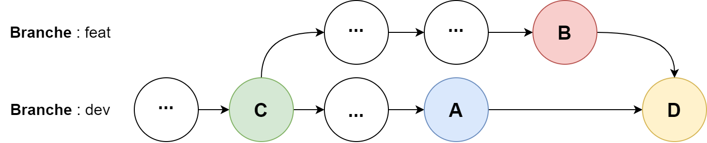

Utilisation avancée de Git
Contenus de la section
1-1 Outils de gestion de projet
Temps requis
30 minutes
Git est un système de versionnage très versatile qui permet la collaboration de larges équipes de développement sur un même projet. Cette page présente quelques fonctionnalités plus avancées de git. Voici un rappel des commandes de base.
| Commande | Paramètres | Effet |
|---|---|---|
git init |
Crée un répertoire vide à l'emplacement où la requête est exécutée. | |
git clone |
lien vers le dépôt distant | Crée une copie locale du dépôt distant spécifié. |
git add |
les fichiers à ajouter, . pour tous les fichiers |
Met les fichiers spécifiés dans l'état staged. |
git commit |
-m spécifie le message du commit (obligatoire) |
Crée un commit avec les fichiers qui sont dans l'état staged. |
git remote add |
le nom du dépôt distant (souvent origin) et le lien vers le dépôt distant | Lie un dépôt distant au dépôt local pour publier les modifications. |
git push |
-u spécifie sur quel dépôt distant et quelle branche le commit doit être publié. |
|
git fetch |
récupère les informations du dépôt distant. | |
git merge |
le nom de la branche à fusionner | Fusionne la branche spécifiée dans la branche active. |
git pull |
Effectue un fetch puis un merge avec les branches distantes. |
Les branches
Git permet de maintenir, au sein d'un même dépôt, des versions parallèles du même projet. Les versions parallèles représentent le même système dans différents états de développement (donc plus ou moins avancés). Chaque version parallèle est maintenue sur une branche. Chaque branche locale peut être liée à une branche distante. On utilise généralement le même nom d'une branche locale et distante afin de pouvoir facilement les associer.
Connaître notre branche
Le nom de la branche sur laquelle l'on travaille est affiché après le nom du répertoire dans la console git.

Les commandes pour manipuler les branches sont les suivantes.
| Commande | Effet |
|---|---|
git branch <nom-branche> |
Crée une nouvelle branche nommée <nom-branche> |
git checkout <nom-branche> |
Change la branche active et la référence HEAD pour la branche indiquée par <nom-branche>. Pour que le changement de branche soit permis, il ne doit y avoir aucun changement qui n'a pas été inclus dans un commit. Si cela arrive, on peut utiliser les stash. |
git branch -d <nom-branch> |
Supprimer la branche nommée <nom-branche> |
git branch -m <ancien-nom-branche> <nouveau-nom-branche> |
Renomme la branche appelée <ancien-nom-branche> en une branche appelée <nouveau-nom-branche> |
git branch -c <ancien-nom-branche> <nouveau-nom-branche> |
Copie la branche appelée <ancien-nom-branche> dans une nouvelle branche appelée <nouveau-nom-branche> |
git pull <nom-branche> |
Effectue l'opération pull sur la branche nommée <nom-branche> |
git push --set-upstream <nom-distant> <nom-branche-distant> |
Lie la branche locale courante avec la branche située sur le distant <nom-distant> et sa branche nommée <nom-branche-distant> |
git push -u <nom-distant> <nom-branche> |
Même effet que la commande git push --set-upstream <nom-distant> <nom-branche-distant> |
La fusion des branches
Fusionner des branches permet d'amener l'état du système d'une branche vers une autre. Lors de la fusion, les modifications sont intégrées selon le différentiel entre les deux versions, géré par l'algorithme ORT. La commande utilisée est git merge <nom branche>. La fusion consiste à amener les changements de la branche indiquée sur la branche où la commande est exécutée. L'algorithme ORT fait une fusion entre trois sources. Dans la figure ci-dessous, le commit A (en bleu) de la branche dev représente la version de la branche active; le commit B (en rouge) de la branche feat est celle de laquelle on apporte les changements; C (en vert) le commit d'ancêtre commun (le point dernier point avant la séparation de la branche feat de dev) et D (en jaune) le commit créé sur dev qui incorpore les changements de feat.


La commande utilisée pour lancer cette fusion seraient les suivantes :
| Fusion de deux branches | |
|---|---|
Ce qui se passe c'est que les versions A, B et C se comparent entre elles. Si A et C sont identiques, mais pas B, alors la version B a apporté une modification par rapport à l'original et ce sera le contenu de B qui se retrouve dans le résultat D. De façon similaire, si B et C sont identiques, mais elle est différente, alors ce sera la version de A qui se retrouve dans le résultat D. Dans le cas où A, B et C sont tous différents, cela signifie que A et B ont modifié la même ligne, ce qui crée un conflit. Évidemment, si A, B et C sont identiques, rien n'a été modifié et la version de C est celle dans le résultat D.
git pull
La fusion ne s'effectue pas uniquement enter des branches parallèles, mais c'est aussi ce qui permet de fusionner la branche associée du distant sur une version locale (fusionner dev avec origin/dev). La commande git pull n'est autre qu'un git fetch de la branche distante associée à la branche suivie sur le distant, puis un git merge pour fusionner la version distante avec la locale. Le fait que deux personnes aient travailler sur la même branche peut donc induire des conflits.
Stratégie de fusion
Deux principales stratégies de fusion existent pour limiter les générations de conflit. Ces stratégies forces l'utilisation de soit la version de la branche en cours (ours), soit dev dans l'exemple ou la version de la branche intégrée (theirs), soit feat dans l'exemple. Concrètement, si l'on exécute plutôt que la commande suivante :
| Fusion de deux branches | |
|---|---|
Alors lorsque A, B et C sont différents, la version A (qui provient de dev) sera utilisée plutôt que de provoquer un conflit.
Le repositionnement de branches
Le déplacement de l'origine (rebase)
Remettre une version antérieure à l'avant (cherry-picking)
La gestion de la pile (stash)
Lorsque l'on souhaite changer de branche, il faut ne faut pas qu'il y ait des changements en cours sur la branche qu'on quitte. Pour ce faire, trois options s'offrent :
- Commit les changements sur la branche
- Effacer les changements faits depuis le dernier commit avec
git reset --hard - Mettre les changements dans la réserve (stash)
La réserve permet de stocker temporairement des changements et de les déplacer entre les branches. Cette fonctionnalité est très utile lorsqu'on se rend compte que l'on a travaillé sur la mauvaise branche AVANT d'avoir commit les changements. Notez que git vous laisse changer de branche si les changements qui ne sont pas commit ne provoquent pas de conflit avec la nouvelle branche. Les commandes avec la stash sont les suivantes.
| Commande | Effet |
|---|---|
git stash |
Envoie les changements qui ne sont pas commit sur le dessus de la pile. |
git stash list |
Liste tous les changements qui sont sur la pile. |
git stash apply |
Applique les changements du dessus de la pile sans les sortir de la pile. |
git stash drop |
Retire les changements du dessus de la pile. |
git stash pop |
Retire et applique les changements du dessus de la pile git stash apply & git stash drop. |
git stash clear |
Retire tous les éléments de la pile. |